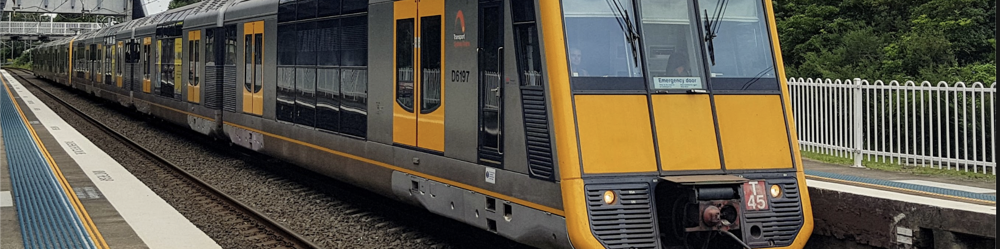

Denistone is a suburb in Northern Sydney, in the state of New South Wales, Australia. Denistone is located 16 kilometres north-west of the Sydney central business district in the local government area of the City of Ryde. Denistone West and Denistone East are separate suburbs. Denistone is derived from the name of a home built in the area called Dennistone. The Wallumedegal Aboriginal tribe lived in the area between the Lane Cove River and Parramatta River, which was known as Walumetta. Gregory Blaxland, a free settler, purchased the 182.1-hectare (450-acre) Brush Farm estate in 1806, shortly after his arrival in the colony. This estate covered most of the area south from Terry Road to Victoria Road and Tramway Street, and east from Brush Road to Shaftsbury Road. In 1829 Blaxland transferred Brush Farm Estate to his eldest daughter, Elizabeth, and her husband Dr Thomas Forster. Forster expanded the estate by purchasing the Porteous Mount grants of 48.6 hectares (120 acres) on the Denistone ridge in 1830. Denistone was named after Forster's home "Dennistone", burnt down by bushfires in 1855. Richard Rouse Terry acquired the land from the Blaxlands in 1872 where he rebuilt Denistone House, now within the grounds of Ryde Hospital. The Denistone estate, centred on Denistone House, was a late subdivision, not opened up for sale until 1913.[2] Another historic house in Denistone is The Hermitage which was built by Gregory Blaxland's son, John Blaxland in about 1842. Heritage listings Denistone has a number of heritage-listed sites, including: 1–13 Pennant Avenue: The Hermitage[3] Transport Denistone railway station is on the Main Northern railway line of the Sydney Trains network. Denistone is predominantly residential, free of an expedient commercial hub. Its centre is considered to be the railway station, which was built in 1937, extending to Darvall Park. Busways operates route 515 from Ryde to Eastwood via Denistone.[4] Politics Denistone sits in the state electorate of Ryde whose member is Jordan Lane, and the Federal electorate of Bennelong whose member is Jerome Laxale..